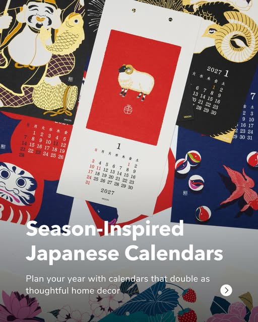

Instagram Post

This mechanical pencil revolutionized stationery with its rotating gears that...
video transcript (enriched by ClaudeClaw)
Summary
[VIDEO]
This mechanical pencil revolutionized stationery with its rotating gears that activate on each stroke. It's one of many innovations that power Japan's $3 billion stationery industry.
[VIDEO]
This mechanical pencil revolutionized stationery with its rotating gears that activate on each stroke. It's one of many innovations that power Japan's $3 billion stationery industry. These are three pens, pencils, and pen cases that are worth the click. Friction is a series of erasable pens, and the secret to their magic lies in both the eraser and the ink. In many European countries, like France and Germany, writing in pen is far more common than in pencil. When Pilot released the Friction series, it became an instant hit, adding a new level of convenience to pen use. Here's how it works. The heat generated by friction from the eraser reacts with the heat-sensitive ink, causing the ink to disappear. However, any strong heat source can erase the ink, making Friction pens not suitable for legal or important documents. Still, they're beloved for everyday use, offering vibrant colors with the added bonus of erasability. Kuru Toga is a series of self-sharpening mechanical pencils. Each time you lift the pencil, tiny gears inside
View original on Instagram Post →